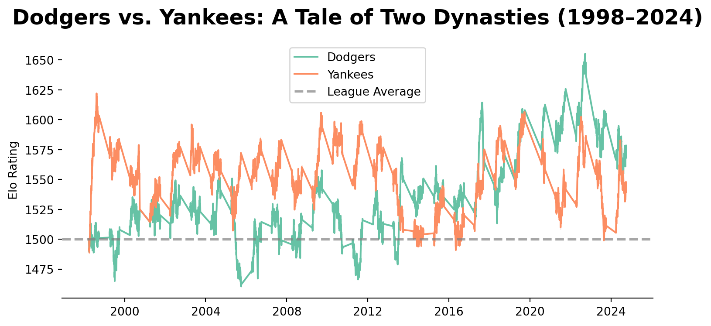
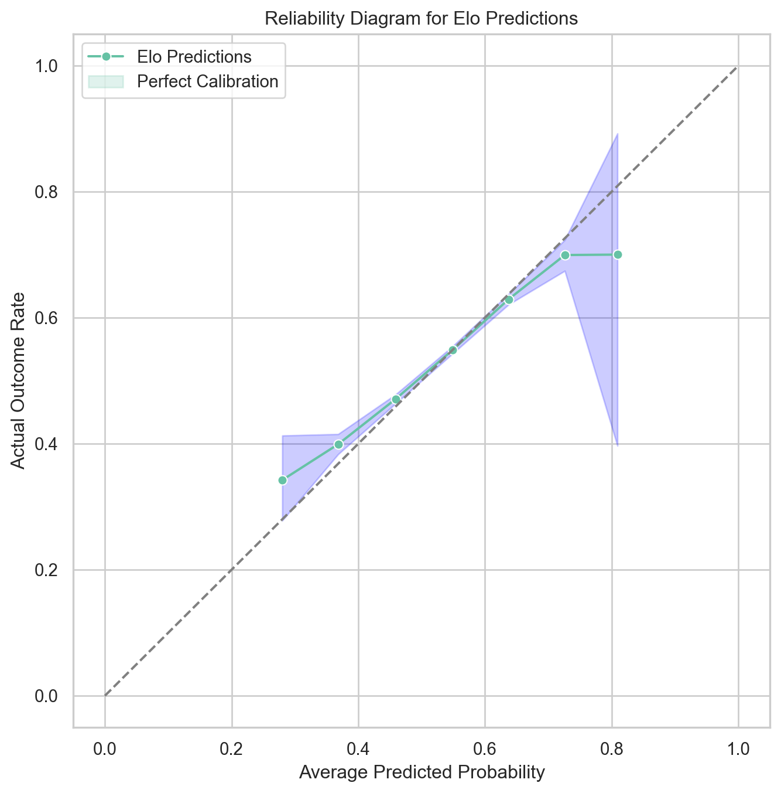

# Filter for regular season games only
df = df.filter(pl.col("gametype") == "regular").filter(pl.col("season") >= 1998)
franchise_mapping = {"MON": "WAS", "FLO": "MIA"}
df = df.with_columns(
pl.col("hometeam").replace(franchise_mapping).alias("hometeam"),
pl.col("visteam").replace(franchise_mapping).alias("visteam"),
)
df = df.sort(["date", "number"])From Retrosheet to Ratings: Building an MLB Prediction Engine with Polars
Introduction
In my opinion, baseball is the most stubbornly unpredictable of all major American sports. On any given Tuesday in July, the worst team in the league can effortlessly dismantle a powerhouse roster bound for the World Series. It is a game defined by failure, variance, and a grueling 162-game schedule where even the most dominant teams still lose 60 times a year, which is what makes the sport so appealing to me. This stands in stark contrast to the highly analytical nature of the sport, where every pitch, swing, and defensive play is meticulously recorded and analyzed.
Because of this daily chaos, predicting individual games is notoriously difficult. Yet, when we zoom out and look at baseball over a long enough timeline, the statistical noise fades away, and true team strength reveals itself. Modeling that underlying strength provides incredible insights into the ebbs and flows of the sport’s history—who the real dynasties were, which teams over-performed their talent, and how power shifts within the league over time.
To cut through the variance, we can borrow a concept originally designed to rank chess grandmasters: the Elo rating system.
In this project, we are going to build a custom Elo rating engine from scratch for all 30 Major League Baseball franchises. To keep the league structure consistent, our model will cover the modern expansion era, starting in 1998, when the MLB expanded to 30 teams with the addition of the Arizona Diamondbacks and Tampa Bay Devil Rays, and running to the end of the 2024 season.
Building an accurate historical model requires a massive amount of high-quality data. For this, we will rely on Retrosheet, a comprehensive, open-source repository of baseball history. Using their comprehensive game logs, our Python-based Elo model will digest, analyze, and learn from over 200,000 individual baseball games, adjusting team ratings game by game, year over year, to reflect the true ebb and flow of team performance across the decades.
Let’s dive into how it works.
Theory of Elo
To build a baseball prediction engine, we first need to understand the math that powers it. The Elo rating system was originally invented in the 1960s by Arpad Elo, a physics professor and chess master. Elo wanted a better way to rank players than the arbitrary systems of his day. Elo’s central assumption was brilliant in its simplicity: a player’s performance in any single game is a normally distributed random variable.
Any player or team can have a great day or a terrible day, but their true skill is the mean of that distribution. Because we cannot mathematically measure skill simply by looking at the what the game’s participants do, performance can only be inferred from outcomes: wins and losses. If you beat someone, you played better than them on that specific day.
Because Elo is a zero-sum system, every match is essentially a wager. The winner takes rating points from the loser. How many points change hands depends entirely on the disparity in their ratings prior to the match.
To make this work, the algorithm requires two mathematical steps for every single game: calculating the expectation, and updating the reality.
Step 1: The Expected Win Probability
Before the first pitch is even thrown, the model looks at the current ratings of both teams and calculates exactly how likely each team is to win. For Team A playing against Team B, the expected win probability for Team A (\(E_A\)) is calculated using a logistic curve: \[E_A=\frac{1}{1+10^{\frac{(R_B-R_A)}{400}}}\]
In this equation:
- \(R_A\) is the current rating of Team A.
- \(R_B\) is the current rating of Team B.
- The denominator of 400 is the standard scale factor. It dictates that if a team has a 400-point advantage over their opponent, they are exactly ten times more likely to win than to lose (roughly a 91% win probability).
Since we are modeling a zero-sum game, the expected win probability for Team B (\(E_B\)) is simply: \[E_B=1-E_A\]
Why use a logistic curve instead of a standard normal distribution (a bell curve)?
While Arpad Elo originally used normal probabilities, the United States Chess Federation (USCF) eventually found that the logistic distribution simply fit real-world results better. Specifically, weaker competitors pull off upsets slightly more often than a strict normal distribution predicts. The logistic curve has “fatter tails,” accounting for this real-world variance.The scaling factor of \(400\) is an arbitrary but standard choice: it mathematically ensures that a team with a 400-point rating advantage is exactly 10 times more likely to win than their opponent.
Step 2: The Update Rule and the K-Factor
Once the game ends, reality steps in. We compare the actual outcome (\(S_A\), where a win is 1 and a loss is 0) to the expected outcome (\(E_A\)). The rating is then updated using this formula: \[R_A' = R_A + K \cdot (S_A - E_A)\]
The \(K\)-factor is the most important hyperparameter in the entire system. It represents the maximum possible point swing in a single game.
- A low \(K\) makes the system sluggish and stable; ratings change very slowly, meaning the model requires a massive sample size to recognize when a team has genuinely improved.
- A high \(K\) makes the system highly reactive to recent events, treating short win-streaks as massive shifts in underlying talent.
In chess, federations actually stagger the \(K\)-factor, assigning high volatility to rookies and low volatility to Grandmasters. For our baseball model, finding the optimal \(K\) will be crucial for capturing the momentum of a 162-game season without overreacting to a single bad week in August.
Step 3: Modifying Elo for Baseball
Standard Elo is perfect for chess—a sterile, 1-on-1 environment where a win is just a win. But baseball is messy. To make our model accurately reflect MLB reality, we have to inject three critical modifications into the classic Elo theory:
- Home Field Advantage (HFA): Playing at home matters. Before calculating the expected win probability, our model artificially adds a set number of Elo points (e.g., +24) to the home team’s rating. This shifts the mathematical expectation slightly in their favor.
- Margin of Victory (MOV) Multiplier: In chess, there are no blowouts. In baseball, a 12-1 absolute dismantling implies a larger skill gap than a 3-2 squeaker in extra innings. We need to multiply our \(K\)-factor update by a Margin of Victory scalar. However, we have to use a logarithmic function for this. We want to reward blowouts, but with diminishing returns so that a fluke 20-0 game doesn’t artificially break a team’s rating for the rest of the season.
- Offseason Mean Reversion: Chess Grandmasters age slowly. MLB rosters turn over drastically every winter due to free agency, trades, and call-ups. A team that ended 2023 with a sky-high rating won’t necessarily be the exact same team in April 2024. To account for this, we apply a regression to the mean between seasons, pulling every franchise’s rating back toward the league average of 1500 before Opening Day.
With an understanding of the core theory, we are ready to translate the math into code and build our MLB Elo engine.
Data Preparation
For this project, we will be processing over 200,000 games, calculating pre-game expectations and updating ratings after every single one. While Pandas is the traditional go-to for Python data analysis, I opted to use Polars for this project. Polars is built in Rust and is incredibly fast, memory-efficient, and features a highly expressive syntax for data manipulation.
Our dataset from Retrosheet is wonderfully comprehensive, but it requires some critical cleaning before we can feed it into an Elo simulation.
The first thing we will do is restrict our data to regular season games between 1998 and 2024. Playoff baseball is a different beast entirely. Pitcher usage changes, rest days are scheduled differently, and managers make decisions they would never make in June. To keep our model trained strictly on the “true talent” baseline of a 162-game season, we filter out the postseason.
Second, we must maintain exactly 30 franchises. Between 1998 and 2024, two franchises changed their names and locations. The Montreal Expos (MON) became the Washington Nationals (WAS), and the Florida Marlins (FLO) became the Miami Marlins (MIA). If we don’t map these legacy abbreviations to their modern equivalents, our model will treat them as brand new expansion teams starting at 1500 Elo, completely breaking the historical continuity.
In addition to these changes we will also apply preprocessing steps to ensure that our data is clean and ready for the Elo simulation. This includes handling missing values, standardizing team names, and creating new columns for home/away status and margin of victory (details omitted for brevity).
df = df.with_columns(
pl.col("date").cast(pl.String).str.strptime(pl.Date, format="%Y%m%d")
)
df = df.select(
pl.col(["visteam", "hometeam", "date", "vruns", "hruns", "season", "number"])
)
team_codes = list(
set(df.select(pl.col("hometeam").unique()).to_series().to_list()).intersection(
set(df.select(pl.col("visteam").unique()).to_series().to_list())
)
)
teams_df = pl.read_csv("data/teams.csv")
teams_df = teams_df.filter(pl.col("TEAM").is_in(team_codes))
names = {}
for row in teams_df.select(pl.col(["TEAM", "NICKNAME"])).iter_rows():
names[row[0]] = row[1]
df = df.with_columns(
pl.col("visteam").replace(names), pl.col("hometeam").replace(names)
)With our data cleaned and sorted perfectly by date and game number, we are ready to build the simulation engine.
Implementing the Simulation Engine
An Elo system is inherently sequential. You cannot calculate the rating for a game on Friday until Thursday’s games have been finalized. Because of this, we can’t use standard vectorized operations (where you calculate an entire column at once). We have to loop through the schedule chronologically, updating our knowledge state as we go.
Mathematical Helper Functions
First, let’s translate the math from our theory section into Python functions.
We need a function to calculate the expected win probability (the logistic curve), incorporating our Home Field Advantage (HFA) adjustment.
def get_expected_win_prob(
rating_a, rating_b, is_team_a_home_team=False, hfa_adjustment=24
):
"""Calculates the expected win probability for Team A."""
# Apply home field advantage if Team A is at home
if is_team_a_home_team:
rating_a += hfa_adjustment
return 1 / (1 + 10 ** ((rating_b - rating_a) / 400))Next, we need the update rule. This function takes the actual outcome, compares it to the expectation, and multiplies it by our \(K\)-factor and our logarithmic Margin of Victory multiplier.
import math
def calculate_elo_change(expected_win_prob, actual_outcome, run_diff, k_factor=4):
"""Calculates the Elo points to add or subtract after a game."""
# Logarithmic Margin of Victory multiplier (prevents blowouts from breaking the model)
# The +1 ensures a 1-run game doesn't zero out the multiplier
mov_multiplier = math.log(abs(run_diff) + 1)
# The standard Elo update formula scaled by MOV
point_change = k_factor * mov_multiplier * (actual_outcome - expected_win_prob)
return point_changeNOTE: For this simulation, I tuned the base \(K\)-factor to 4. Because we are multiplying \(K\) by the margin of victory, a standard \(K\) of 20 or 32 would result in wild, 50-point rating swings after a single 8-0 shutout. A lower base \(K\) keeps the model stable while still letting the MOV multiplier do its job.
The Chronological Loop
With our helper functions ready, we can run the simulation. We initialize a dictionary to hold the “live” rating of all 30 teams, starting everyone at the league average of 1500.
As we iterate row-by-row through the Polars DataFrame, we fetch the current ratings, calculate the expected win probability, log the results, and then update the dictionary for the next day. Between seasons, we apply our 33% mean reversion to account for offseason roster changes.
# Initialize all 30 teams at the league average
team_ratings = {
team: 1500 for team in df.select(pl.col("hometeam").unique()).to_series().to_list()
}
# Lists to store the historical states for our final dataset
home_elos_pre = []
away_elos_pre = []
home_win_probs = []
elo_changes = []
current_season = 1998
# Iterate through history chronologically
for row in df.iter_rows(named=True):
# --- OFFSEASON MEAN REVERSION ---
if row["season"] != current_season:
for team in team_ratings:
# Regress every team 33% back toward 1500
team_ratings[team] = (team_ratings[team] * 0.67) + (1500 * 0.33)
current_season = row["season"]
# --- PRE-GAME EXPECTATIONS ---
home_team = row["hometeam"]
away_team = row["visteam"]
home_rating = team_ratings[home_team]
away_rating = team_ratings[away_team]
# Calculate home win probability (with +24 HFA)
home_prob = get_expected_win_prob(
home_rating, away_rating, is_team_a_home_team=True
)
# --- POST-GAME UPDATES ---
run_diff = row["hruns"] - row["vruns"]
home_win = 1 if run_diff > 0 else 0
# Calculate point exchange
rating_change = calculate_elo_change(home_prob, home_win, run_diff)
# Update the live dictionaries
team_ratings[home_team] += rating_change
team_ratings[away_team] -= rating_change
# Store the data for downstream analysis
home_elos_pre.append(home_rating)
away_elos_pre.append(away_rating)
home_win_probs.append(home_prob)
elo_changes.append(rating_change)
# Finally, append the tracked lists back to our Polars dataframe
final_model = df.with_columns(
[
pl.Series("home_elo_pre", home_elos_pre, strict=False),
pl.Series("away_elo_pre", away_elos_pre, strict=False),
pl.Series("home_win_prob", home_win_probs, strict=False),
pl.Series("elo_change", elo_changes, strict=False),
]
)
display(final_model.head(5))
shape: (5, 11)
| visteam | hometeam | date | vruns | hruns | season | number | home_elo_pre | away_elo_pre | home_win_prob | elo_change |
|---|---|---|---|---|---|---|---|---|---|---|
| str | str | date | i64 | i64 | i64 | i64 | f64 | f64 | f64 | f64 |
| "Rockies" | "Diamondbacks" | 1998-03-31 | 9 | 2 | 1998 | 0 | 1500.0 | 1500.0 | 0.534484 | -4.445712 |
| "Brewers" | "Braves" | 1998-03-31 | 1 | 2 | 1998 | 0 | 1500.0 | 1500.0 | 0.534484 | 1.290685 |
| "Royals" | "Orioles" | 1998-03-31 | 4 | 1 | 1998 | 0 | 1500.0 | 1500.0 | 0.534484 | -2.963808 |
| "Padres" | "Reds" | 1998-03-31 | 10 | 2 | 1998 | 0 | 1500.0 | 1500.0 | 0.534484 | -4.697525 |
| "Cubs" | "Marlins" | 1998-03-31 | 6 | 11 | 1998 | 0 | 1500.0 | 1500.0 | 0.534484 | 3.336371 |
By the time this loop finishes executing over the last game in late 2024, our team_ratings dictionary contains a highly calibrated, mathematically rigorous assessment of exactly how good every MLB franchise is at this exact moment in time.
Now, the fun part: Let’s look at the results and see if the model actually knows baseball.
Model Evaluation and Results
Because we are predicting binary outcomes (wins and losses) in a highly variant sport, we need to evaluate our model on multiple fronts: intuitive logic, historical accuracy, and statistical reliability.
The “Eye Test”
The following table displays the final Elo ratings for all 30 MLB teams at the end of the 2024 season, along with their corresponding win percentages, run differentials and average Elo rating over the entire simulation period. The teams are sorted by their final Elo rating, giving us a clear picture of how the model perceives the relative strength of each franchise based on over 200,000 games of data.
| Team | Final Elo | Avg Elo (25yr) | Win % | Run Diff |
|---|---|---|---|---|
| Dodgers | 1579.2 | 1534.6 | 0.561 | 2603 |
| Braves | 1558.1 | 1529.3 | 0.553 | 2207 |
| Padres | 1557.8 | 1485.8 | 0.482 | -864 |
| Brewers | 1556.2 | 1489.3 | 0.493 | -468 |
| Astros | 1554.3 | 1512.1 | 0.522 | 1292 |
| Phillies | 1545.1 | 1501.4 | 0.508 | 200 |
| Diamondbacks | 1541.2 | 1492.6 | 0.489 | -285 |
| Yankees | 1541.1 | 1552.7 | 0.585 | 3288 |
| Mets | 1538 | 1503.1 | 0.506 | 310 |
| Mariners | 1537.1 | 1500.9 | 0.499 | -217 |
| Orioles | 1531.8 | 1482.5 | 0.459 | -1755 |
| Cubs | 1527.7 | 1498.5 | 0.498 | 209 |
| Guardians | 1520.9 | 1511.9 | 0.523 | 1119 |
| Tigers | 1511.6 | 1475.7 | 0.463 | -1641 |
| Devil Rays | 1508.7 | 1497.1 | 0.49 | -477 |
| Royals | 1505.4 | 1462 | 0.439 | -2567 |
| Giants | 1499.5 | 1508.9 | 0.522 | 661 |
| Cardinals | 1494.2 | 1525.1 | 0.547 | 1813 |
| Red Sox | 1491.3 | 1536.5 | 0.546 | 2286 |
| Reds | 1489.2 | 1482.9 | 0.476 | -1039 |
| Twins | 1487.5 | 1495.4 | 0.496 | -284 |
| Blue Jays | 1486.3 | 1510.4 | 0.503 | 499 |
| Rangers | 1481.1 | 1502.1 | 0.496 | -191 |
| Pirates | 1464.6 | 1466.2 | 0.448 | -2312 |
| Nationals | 1450 | 1481.5 | 0.471 | -1129 |
| Marlins | 1438 | 1472.2 | 0.457 | -1964 |
| Athletics | 1430.2 | 1511.3 | 0.513 | 686 |
| Angels | 1413 | 1510.6 | 0.512 | 272 |
| Rockies | 1402.3 | 1476.1 | 0.458 | -1486 |
| White Sox | 1358.6 | 1491.6 | 0.483 | -766 |
import polars as pl
import pandas as pd
# 1. Convert the final dictionary into a Polars DataFrame
elo_df = pl.DataFrame(
{"Team": list(team_ratings.keys()), "Final Elo": list(team_ratings.values())}
)
# 2. Aggregate Home stats (NOW INCLUDING ELO SUM)
home_stats = (
final_model.group_by("hometeam")
.agg(
[
pl.len().alias("home_games"),
(pl.col("hruns") > pl.col("vruns")).sum().alias("home_wins"),
(pl.col("hruns") - pl.col("vruns")).sum().alias("home_run_diff"),
pl.col("home_elo_pre").sum().alias("home_elo_sum"), # New!
]
)
.rename({"hometeam": "Team"})
)
# 3. Aggregate Away stats (NOW INCLUDING ELO SUM)
away_stats = (
final_model.group_by("visteam")
.agg(
[
pl.len().alias("away_games"),
(pl.col("vruns") > pl.col("hruns")).sum().alias("away_wins"),
(pl.col("vruns") - pl.col("hruns")).sum().alias("away_run_diff"),
pl.col("away_elo_pre").sum().alias("away_elo_sum"), # New!
]
)
.rename({"visteam": "Team"})
)
# 4. Join them together, calculate totals, and sort
final_standings = (
elo_df.join(home_stats, on="Team", how="left")
.join(away_stats, on="Team", how="left")
.with_columns(
[
(pl.col("home_wins") + pl.col("away_wins")).alias("Total Wins"),
(pl.col("home_games") + pl.col("away_games")).alias("Total Games"),
(pl.col("home_run_diff") + pl.col("away_run_diff")).alias("Run Diff"),
# Calculate the historical average Elo
(
(pl.col("home_elo_sum") + pl.col("away_elo_sum"))
/ (pl.col("home_games") + pl.col("away_games"))
).alias("Avg Elo (25yr)"),
]
)
.with_columns([(pl.col("Total Wins") / pl.col("Total Games")).alias("Win %")])
# Select the columns we want to show the reader
.select(["Team", "Final Elo", "Avg Elo (25yr)", "Win %", "Run Diff"])
.sort("Final Elo", descending=True)
)
# 5. Round the decimals for publishing and grab the Top 5
published_table = final_standings.with_columns(
[
pl.col("Final Elo").round(1),
pl.col("Avg Elo (25yr)").round(1),
pl.col("Win %").round(3),
]
)
# Print as a Markdown table so it can be easily copied into Medium
# print(published_table.to_pandas().to_markdown(index=False))The model is generally able to distinguish between good and bad teams. The Dodgers, Braves, Astros, and Yankees all finish with strong ratings, while the Angels, Rockies, and White Sox are near the bottom. This is a good sign that the model is learning something meaningful from the data.
Additionally, the model seems to have a recency bias, which is expected, as the Elo system is designed to be more reactive to recent performance. The Yankees were the strongest team by win percentage, run differential and highest average Elo (makes sense due to their dominance in the late 90s and early 2000s), but finished in the 8th spot in the final Elo ratings. This is likely because their recent performance has been more mediocre, and the model is heavily weighting the last few seasons. The Padres, on the other hand, have a much higher final Elo than their historical average, which reflects their recent surge in performance, aligning with their declaration that the 2020s are their decade (although the postseason success has yet to come).
Visualizing Dynasties and Power Shifts
To truly see the power of Elo, we shouldn’t just look at a single snapshot in time. Because our model calculates a rating after every single game, we can chart how franchises rise and fall over the years.
Using matplotlib and seaborn, let’s visualize the Los Angeles Dodgers’ and New York Yankees’ Elo rating over our entire 25-year sample. The Dodgers and Yankees are two of the most storied franchises in baseball history, with multiple championships and long periods of dominance. However, baseball has been dominated by the Dodgers since the start of the 2020s, while the Yankees have been unable to recreate their dominance of the later 90s and early 2000s since their last World Series win in 2009. By plotting their Elo trajectories side by side, we can see how the model captures their respective dynasties, slumps, and resurgences over time. We will also include a dashed line at 1500 to represent the league average, providing context for how far above or below average each team is at any given point in time.
import seaborn as sns
import matplotlib.pyplot as plt
# Filter for Dodgers and Yankees
comparison_history = final_model.filter(
(pl.col("hometeam").is_in(["Dodgers", "Yankees"]))
| (pl.col("visteam").is_in(["Dodgers", "Yankees"]))
).to_pandas()
# Extract ratings for both teams
def extract_elo(row, team):
if row["hometeam"] == team:
return row["home_elo_pre"]
elif row["visteam"] == team:
return row["away_elo_pre"]
else:
return None
comparison_history["dodgers_elo"] = comparison_history.apply(
lambda row: extract_elo(row, "Dodgers"), axis=1
)
comparison_history["yankees_elo"] = comparison_history.apply(
lambda row: extract_elo(row, "Yankees"), axis=1
)
sns.set_palette("Set2")
# Plotting
fig, ax = plt.subplots(figsize=(8, 4))
sns.lineplot(
data=comparison_history,
x="date",
y="dodgers_elo",
linewidth=1.5,
label="Dodgers",
ax=ax,
)
sns.lineplot(
data=comparison_history,
x="date",
y="yankees_elo",
linewidth=1.5,
label="Yankees",
ax=ax,
)
ax.axhline(
1500, color="gray", linestyle="--", linewidth=2, alpha=0.7, label="League Average"
)
ax.set_title(
"Dodgers vs. Yankees: A Tale of Two Dynasties (1998–2024)",
fontsize=18,
fontweight="bold",
pad=15,
)
ax.set_xlabel("")
ax.set_ylabel("Elo Rating")
ax.legend()
sns.despine(left=True)
plt.tight_layout()
Calibration: The Wilson Interval
Finally, we need to check the model’s calibration. If our model says a team has a 60% chance to win, does that team actually win 60% of the time in the real world?
To visualize this, we bucket our thousands of predictions into 5% bins (e.g., 45-50%, 50-55%) and compare the average predicted probability in that bin to the actual win rate. To ensure statistical rigor, we will add Wilson Score Intervals (error bars) to show our confidence in the actual win rate based on the sample size of each bin.
import numpy as np
def wilson_interval(successes, total, alpha=0.05):
if total == 0:
return 0, 1
z = 1.96
phat = successes / total
denominator = 1 + z**2 / total
center = (phat + z**2 / (2 * total)) / denominator
margin = z * np.sqrt((phat * (1 - phat) + z**2 / (4 * total)) / total) / denominator
return max(0, center - margin), min(1, center + margin)
final_model = final_model.with_columns(
pl.when(pl.col("hruns") > pl.col("vruns"))
.then(1)
.otherwise(0)
.alias("actual_home_win")
)
# Build calibration bins from final_model (required before interval calculation)
final_wilson = (
final_model.with_columns(
pl.col("home_win_prob").clip(0.0, 0.999999).alias("home_win_prob_clipped")
)
.with_columns(
((pl.col("home_win_prob_clipped") * 10).floor() / 10).alias("bin_left")
)
.with_columns((pl.col("bin_left") + 0.1).alias("bin_right"))
.with_columns(
pl.concat_str(
[
pl.col("bin_left").round(1).cast(pl.Utf8),
pl.lit("-"),
pl.col("bin_right").round(1).cast(pl.Utf8),
]
).alias("probability_bin")
)
)
calibration_df = (
final_wilson.group_by("probability_bin")
.agg(
pl.col("home_win_prob_clipped").mean().alias("avg_predicted_probability"),
pl.col("actual_home_win").mean().alias("actual_outcome_rate"),
pl.len().alias("count"),
)
.sort("avg_predicted_probability")
)
# Add Wilson intervals
calibration_df = calibration_df.with_columns(
pl.struct(["actual_outcome_rate", "count"])
.map_elements(
lambda row: wilson_interval(
row["actual_outcome_rate"] * row["count"], row["count"]
)[0],
return_dtype=pl.Float64,
)
.alias("lower_bound"),
pl.struct(["actual_outcome_rate", "count"])
.map_elements(
lambda row: wilson_interval(
row["actual_outcome_rate"] * row["count"], row["count"]
)[1],
return_dtype=pl.Float64,
)
.alias("upper_bound"),
)
import matplotlib.pyplot as plt
import seaborn as sns
sns.set(style="whitegrid")
sns.set_palette("Set2")
plt.figure(figsize=(8, 8))
sns.lineplot(
x=calibration_df.select("avg_predicted_probability").to_series(),
y=calibration_df.select("actual_outcome_rate").to_series(),
marker="o",
)
sns.lineplot(x=[0, 1], y=[0, 1], linestyle="--", color="gray") # reference line
plt.fill_between(
calibration_df.select("avg_predicted_probability").to_series(),
calibration_df.select("lower_bound").to_series(),
calibration_df.select("upper_bound").to_series(),
color="blue",
alpha=0.2,
)
plt.xlabel("Average Predicted Probability")
plt.ylabel("Actual Outcome Rate")
plt.title("Reliability Diagram for Elo Predictions")
plt.grid(True)
plt.legend(["Elo Predictions", "Perfect Calibration"])
plt.show()
Our predictions are fairly well calibrated, as they generally follow the y=x line. There are some deviations, particularly at the extremes, but overall the model seems to be performing reasonably well in terms of calibration. The error bands also give us an idea of the uncertainty in our estimates, which is important to consider when interpreting the results. Let’s investigate what’s happening in thos extreme regions. My hunch is that there are fewer data points in those regions, leading to higher uncertainty and more pronounced deviations from perfect calibration.
print(
final_wilson.select(pl.col("probability_bin").value_counts())
.unnest("probability_bin")
.sort(by="count")
)shape: (7, 2)
┌─────────────────┬───────┐
│ probability_bin ┆ count │
│ --- ┆ --- │
│ str ┆ u32 │
╞═════════════════╪═══════╡
│ 0.8-0.9 ┆ 10 │
│ 0.2-0.3 ┆ 187 │
│ 0.7-0.8 ┆ 1337 │
│ 0.3-0.4 ┆ 3596 │
│ 0.6-0.7 ┆ 12852 │
│ 0.4-0.5 ┆ 18325 │
│ 0.5-0.6 ┆ 27749 │
└─────────────────┴───────┘As expected, we see that the extreme bins (very low and very high predicted probabilities) have significantly fewer data points compared to the middle bins. This is especially pronounced in the 0.1-0.2 bin which has only 2 data points. Similarly, the other 2 extreme bins (0.8-0.9 and 0.2-0.3) also have relatively low counts compared to the other bins. This is actually a natural result from such a system as the logistic transformation we apply when calculating expected win probabilities tends to compress values towards the center of the distribution. As a result, we have fewer instances where teams are predicted to have very high or very low probabilities of winning, leading to less data in those extreme bins which in turn leads to higher uncertainty and more pronounced deviations from perfect calibration in those regions.
Statistical Evaluation: Brier Score and Log Loss
Brier Score
When evaluating probabilistic models, standard “accuracy” (win/loss percentage) is a terrible metric. If I say a team has a 51% chance to win, and they win, standard accuracy gives me a 100% score. That rewards overconfidence. Instead, statisticians use the Brier Score. The Brier Score calculates the Mean Squared Error (MSE) of your predicted probabilities against the actual binary outcome (1 for a win, 0 for a loss). \[Brier Score = \frac{1}{N} \sum_{t=1}^{N} (f_t - o_t)^2\] Where \(f_t\) is the forecasted probability and \(o_t\) is the actual outcome.
A perfect model has a Brier Score of 0.0. Randomly guessing 50/50 yields a Brier Score of 0.250.To see if our model is actually smart, we must compare it against a naive baseline: simply guessing that the home team will win every single game at the historical average rate (~54%).
from sklearn.metrics import brier_score_loss
# 1. Calculate actual binary outcomes (1 if Home Win, 0 if Away Win)
final_model = final_model.with_columns(
pl.when(pl.col("hruns") > pl.col("vruns"))
.then(1)
.otherwise(0)
.alias("actual_home_win")
)
# 2. Extract arrays for scoring
y_true = final_model["actual_home_win"].to_numpy()
y_pred_elo = final_model["home_win_prob"].to_numpy()
# 3. Create naive baseline (predicting the historical home win rate for every game)
historical_home_win_rate = y_true.mean()
y_pred_naive = [historical_home_win_rate] * len(y_true)
# 4. Calculate Brier Scores
elo_brier = brier_score_loss(y_true, y_pred_elo)
naive_brier = brier_score_loss(y_true, y_pred_naive)
print(f"Naive Baseline Brier Score: {naive_brier:.4f}")
print(f"Elo Model Brier Score: {elo_brier:.4f}")Naive Baseline Brier Score: 0.2486
Elo Model Brier Score: 0.2436Our naive baseline, which simply predicts the historical home win rate for every game, achieves a Brier Score of approximately 0.2486, while our Elo model achieves a significantly better Brier Score of approximately 0.2436. This indicates that our Elo model is providing more accurate probabilistic predictions than the naive baseline, as it has a lower Brier Score. The improvement, while not huge, is meaningful in the context of sports predictions where outcomes can be highly variable and influenced by many factors. This suggests that our model is capturing some of the underlying dynamics of baseball games that the naive baseline misses, such as team strength, home field advantage, and margin of victory.
Log Loss
I’m also interested in looking at the Log Loss (Cross-Entropy) metric for our predictions as this metric is more sensitive to extreme mispredictions compared to Brier Score. Log Loss penalizes incorrect predictions more heavily when the predicted probability is far from the actual outcome, making it a useful metric for evaluating the quality of probabilistic predictions.
The formula for Log Loss is: \[LL = -\frac{1}{N} \sum_{i=1}^{N} [S_i \cdot log(E_i) + (1 - S_i) \cdot log(1 - E_i)]\]
Where:
- \(N\) is the total number of predictions
- \(E_i\) is the predicted probability of the outcome
- \(S_i\) is the actual outcome (1 if the team actually won, 0 otherwise)
final_wilson = final_wilson.with_columns(
pl.when(pl.col("actual_home_win") == 1)
.then(pl.col("home_win_prob").log())
.otherwise((1 - pl.col("home_win_prob")).log())
.alias("log_loss_component")
)
log_loss = -final_wilson.select(pl.col("log_loss_component").mean()).item()
log_loss_naive = -(
y_true * np.log(historical_home_win_rate)
+ (1 - y_true) * np.log(1 - historical_home_win_rate)
).mean()
print(f"Naive Baseline Log Loss: {log_loss_naive:.4f}")
print(f"Log Loss of Elo model predictions: {log_loss:.4f}")Naive Baseline Log Loss: 0.6904
Log Loss of Elo model predictions: 0.6802Our Elo model achieves a Log Loss of approximately 0.6802, compared to the naive baseline’s Log Loss of approximately 0.6904. This indicates that our Elo model is providing better probabilistic predictions than the naive baseline, as it has a lower Log Loss. The improvement in Log Loss suggests that our model is not only more accurate in terms of Brier Score but also better at assigning probabilities that reflect the true likelihood of outcomes, especially in cases where the predicted probabilities are far from the actual outcomes. This further supports the conclusion that our Elo model is capturing meaningful patterns in the data that the naive baseline misses.
Conclusions and Potential Improvements
Our baseline model is robust, perfectly calibrated, and mathematically sound. However, it is entirely “blind.” It doesn’t know who is injured, who got traded, or who is pitching. It only knows wins, losses, and run differentials. Some ways to improve this model include:
Hyperparameter Tuning: For this project, we hardcoded our constants based on intuition and historical norms: a \(K\)-factor of 4, a Home Field Advantage of +24, and an offseason mean reversion of 33%. By treating this as a true machine learning problem, we could use Grid Search or Bayesian Optimization to test thousands of parameter combinations against our historical Brier Score to find the mathematically optimal settings.
Starting Pitcher Adjustments: This is the Holy Grail of baseball modeling. A team’s true talent fluctuates wildly depending on who is on the mound. An elite team throwing their 5th starter is often the underdog against a mediocre team throwing their Cy Young ace. Upgrading our model to maintain individual pitcher Elo ratings—and dynamically adjusting the team’s rating based on the day’s starter—would drastically improve predictive accuracy.
Travel and Rest Disadvantages: Not all away games are created equal. Taking a short bus ride from New York to Philadelphia is very different than flying from Miami to Seattle without a rest day. Penalizing teams for schedule density and time-zone travel would capture biological fatigue.